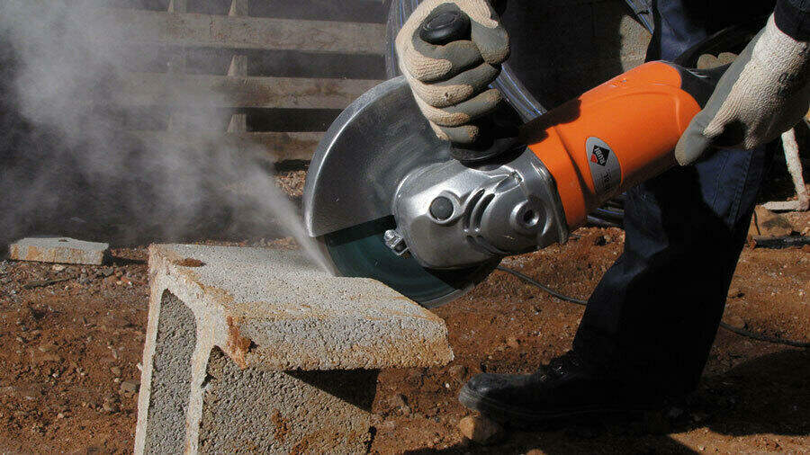
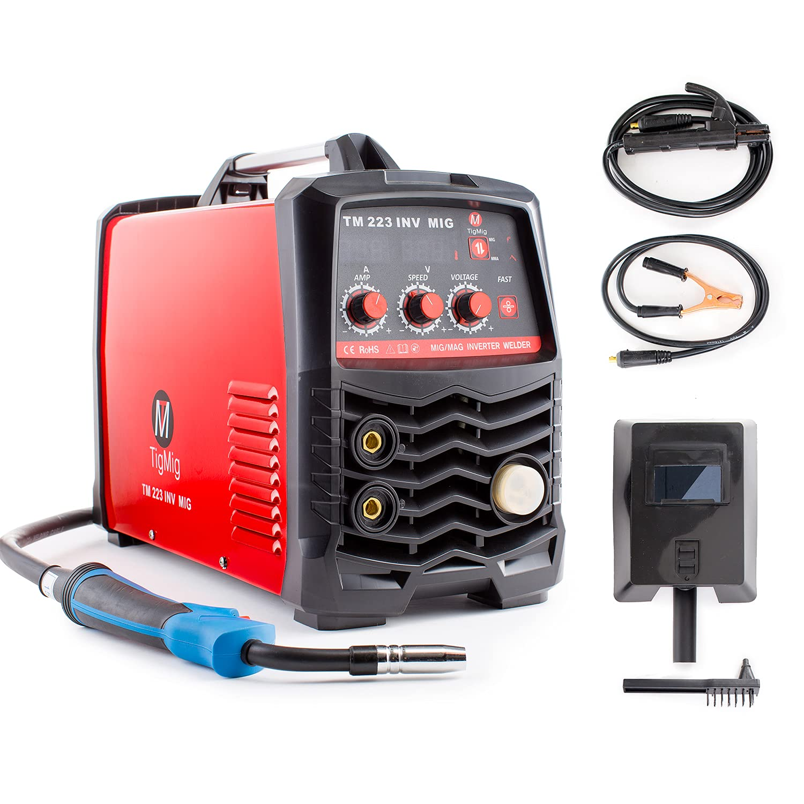
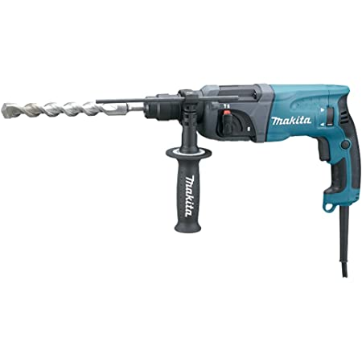

|  |
Amoladora angular o radial
Marca Acme
Hace una semana probamos esta amoladora,
y francamente estamos bastante convencidos con ella,
no es la mas barata del mercado, pero
solo con la hoja que viene de serie ya es una gran
inversion.
La mayoria de amoladoras vienen con hojas
de bastante mala calidad y sorprendemente esta es
muy
buena.
Precio: 347.000 ฿
|
|  |
Aparato de soldar
Marca Nisu
Probe dicho trasto hace casi 2 meses, y
aun estoy dudando si merece aparecer en esta pagina,
este trasto no lo queria tener nisiquiera
en mi vecindario. La expresion trampa mortal se le
queda
corta. Si lo que buscas es torturar un
preso en guantanamo cumplira su funcion
perfectamente.
Precio: Indiferente, incluso gratis
has pagado demasaido por el.
|
|  |
Taladradora con percutor
Marca Acme
Aun estamos poniendo a prueba dicha
herramienta, pero de momento promete.
Esla mas cara en su gama y bastante mas
cara que el resto de sus competidoras, pero despues
de llevar
con ella 2 semanas no me arrepiento para
nada del desembolso. Aparte de servir como
taladradora
tambien se le puede adjuntar varias cosas
mas, como por ejemplo un cepillo para desbarbar una
soldadura
Precio: 14741,61 ¥
|